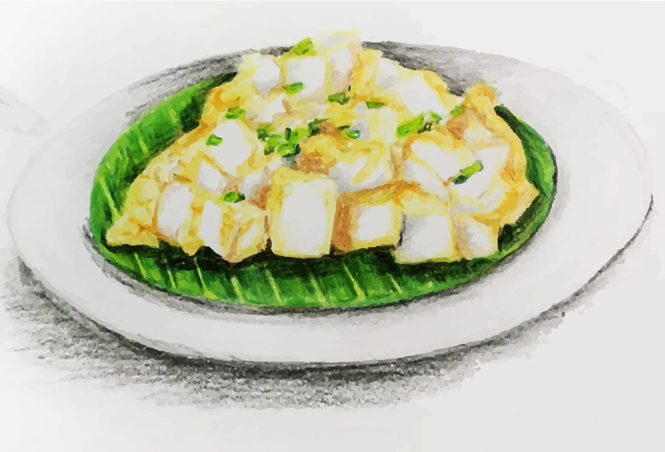

Chai tow kway (菜頭粿)

Fried daikon cake with chopped preserved turnip, diced garlic, eggs, and Chinese fish sauce 🥕🎂
The dish is very popular particularly in Singapore and Malaysia,
where it is enjoyed by people of different dialect groups and races,
and not just the Teochews, and is served in a range of establishments
ranging from the simplest hawkers to the most expensive
Chinese restaurants. It is a much-loved local comfort food
in the region, and can be consumed at various times of the day;
it goes from being a breakfast dish, to a side dish,
to a late-night supper dish. 😋
Ingredients
- 2 blocks of frozen radish cake, cut into ½ in cubes
- 2-3 tbsp oil
- 1 tbsp preserved salted radish (quickly soak, drained, chopped)
- 2 cloves garlic (chopped)
- 1 tsp light soy sauce
- ½ tspof Nước Mắm (fish sauce)
- ½ tsp sugar
- 1 large egg (beaten) + ¼ tsp soy sauce and dash of pepper
- ½ tsp sambal chilli
- 100g bean sprouts
- 2 tbsp spring onions (chopped)
Instructions
Gather all the ingredients. Spread it out and let it cool completely.
To make the Chai tow kway
- In a non-stick wok or pan, add the oil and place over high heat. When heated up, carefully add cubed carrot cake into the pan. Spread them out and be careful of oil splattering. Leave to cook on one side for 1-2 mins before turning them over to fry the other side.
- When both sides are crisp and golden brown, push the cubes aside with a spatula. Using the spatula, bring the oil to the centre and add garlic and preserved radish. Saute for ½ min and using the spatula, combine with the carrot cake. Drizzle in the soy sauce, fish sauce and sugar and sambal. Mix it thoroughly.
- Arrange the carrot cake in the centre of the pan in one layer. Slowly pour the beaten egg mixture over the entire surface. Use your spatula to gently move the carrot cake so that the egg settles in between the pieces. Leave it for a minute to crisp up.
- Then using the spatula, cut into and flip each carrot cake cube over to cook the other side for ½ min. Flip over again for a few seconds, then flip back. Turn off the heat and transfer to a serving plate. Sprinkle with chopped scallions and serve immediately.
Back to recipes